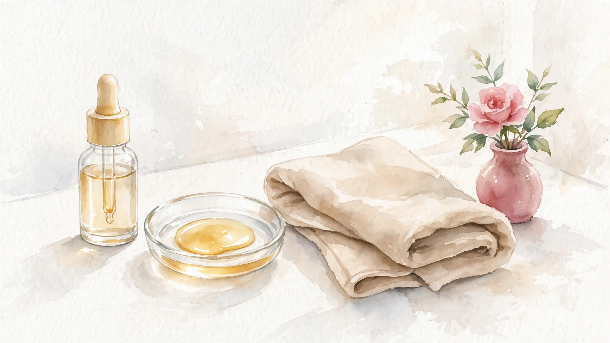

トップ ＞ スキンケア ＞ 美容液の使用量、どう決める？ パッケージの『適量』の読み方
美容液の使用量、どう決める？ パッケージの『適量』の読み方

施術の仕事をしていると、お客様から「美容液って、結局どれくらいの量を使うのがいいんですか」と聞かれることがあります。パッケージを見ると「適量」「パール粒大」「1〜2プッシュ」など、書き方はさまざまです。この記事では、特定の商品の話ではなく、量の表示の読み方そのものを整理します。私自身、商品を使うときは、まずこの表示を確認するようにしています。
「適量」の書き方は、大きく3つのタイプ
ひとつ目は、大きさで例えるタイプです。「パール粒大」「あずき粒大」「さくらんぼ大」「500円玉大」など、身近なものに置き換えた表現で、美容液やクリームによく見られます。ふたつ目は、回数で示すタイプ。「1〜2プッシュ」「スポイト1回分」のように、容器の仕組みとセットで量が決まるものです。みっつ目は、長さで示すタイプで、チューブから何センチ出すか、といった書き方です。
同じ「パール粒大」でも、メーカーによって想定する大きさが少しずつ違うことがあります。迷ったら、手のひらに出した量を、実際の硬貨や自分の指先と見比べてみるのが早道です。私は新しい商品を使い始めるとき、最初の数回は「表示の量だとこのくらいか」と、目で見て手で覚えるようにしています。
内容量と使用期間から、1回量を逆算する
パッケージや公式の案内に「内容量30mL、約1か月分（朝晩使用）」のように書かれていることがあります。この場合、30mLを約60回で割ると、1回あたりはおよそ0.5mL、という計算ができます。あくまで目安の数字ですが、「表示の適量」が自分の感覚とどれくらい合っているかを確かめる材料になります。
逆に、表示より多めに使えば、その分なくなるのは早くなりますし、少なめに使えば長く持ちます。当たり前のことですが、定期購入の間隔を考えるときも、この「1回量×回数＝なくなる時期」という計算が基本になります。次が届く前に余るか足りなくなるかは、量の使い方次第なのです。
なお、「約1か月分」という案内が、朝晩の使用を前提にしているのか、朝だけなのかも、あわせて確認しておくと計算がぶれません。使う回数が半分になれば、割る回数も半分になります。
施術の現場では「面積」で量を決める
施術では、クリームやオイルの量を「塗る面積」で決めます。背中と手の甲では必要な量がまったく違いますし、同じ顔でも、額と頬では広さが違います。美容液も同じで、テクスチャーの伸び方によって広がり方が変わるため、表示の量を出発点にして、足りなければ少し継ぎ足す、という使い方が無駄になりにくいと感じています。
一度にたくさん出すと、余った分を伸ばしきれず、手に残ってしまいます。私は「まず表示量、足りなければ継ぎ足す」を基本にして、肌の上で指が滑る感触を目安に微調整しています。これは施術でも自宅のケアでも、同じ考え方です。
もうひとつ、現場でよくやるのが「分けて出す」ことです。顔全体の分を一度に出すのではなく、頬、額、あご、といった具合に、場所ごとに小分けにして出します。出すたびに量を確認できるので、多すぎる・少なすぎるの調整がしやすくなります。自宅のケアでも、ポンプを押す回数を場所ごとに決めておくと、毎回同じリズムで使えます。
迷ったときの基本
量に迷ったら、まずはパッケージの表示通りに使うのが基本です。表示は、その商品の容器やテクスチャーを前提に決められています。使っていて肌に合わない感じがしたときは、使用をいったんやめて、気になる場合は皮膚科などの専門家に相談してください。この記事は量の読み方の案内であり、商品ごとに表示がある場合は、そちらが優先です。
セラフィナ「量の目安は、パッケージの中にちゃんと書いてあるんだね。まずは表示通り、それが基本だよ」